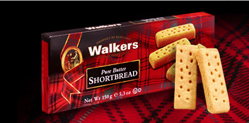

Walkers座落于英国苏格兰美丽的Aberlour Speyside高地中心的小村庄里，从那时开始生产世界上最好的燕麦饼干，至今已经超过一百多年。 1898年Joseph Walkers成立Walkers，如今他的曾孙仍然秉持延续使用传统秘方制造最好吃的产品。事实上，创始者的个人坚持仍呈现在每个产品上， 就是Walkers的产品只使用最好的原料，世界各地对于Walkers产品的喜爱，意味着Walkers生产的饼干是欧洲最好的饼干之一，是由结合最新科技和传统的方法制成的饼干。
Walkers是唯一荣获三项皇后奖 (出口成就奖与两次的年度英国出口奖)的苏格兰食品制造公司。Walkers至今仍然坚持每次只烘烤少量的饼干来维持质量及经典的风味。 燕麦饼干世代以来颇受苏格兰人的青睐，由古传秘方烘培，原料皆为高质量的燕麦。苏格兰皇家饼干沿袭传统，所采用的原料始终为最好的纯奶油、面粉和盐。 Walkers饼干是世上无法抗拒的美味，延袭世代相传的原料配方制成，含有水果、坚果与知名的德麦拉蔗糖。多样式口味的Walkers饼干，细致的质感与坚果交织而成的美味口感，广受世界各地的喜爱。 
Walkers饼干以苏格兰独特的格子纹内外包装闻名，特有的苏格兰皇家商标代表着卓越的质量，是最精致也最能表达心意的好礼，也是与家人朋友分享美好时光的优质饼干。 其中最为人熟知的是地道的传统英国奶油口味，甜度适中，口感扎实，一口就可体会香醇奶香在口中自然融化开来的满足感。 此款苏格兰皇家圆形奶油饼干为苏格兰皇家奶油饼干最经典的口味之一，坚持使用传统秘方制造而成，是体验苏格兰风情的第一选择。